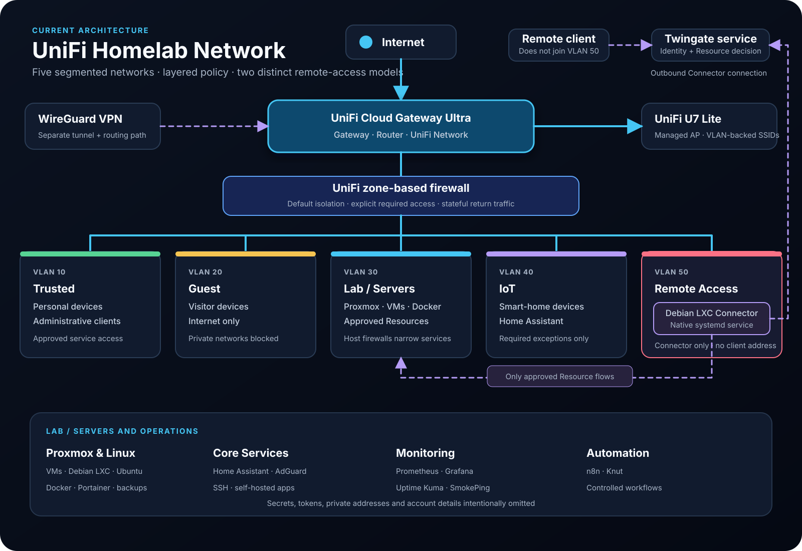

Structured troubleshooting
Define expected behavior, gather evidence across layers, test one hypothesis at a time and verify the result.
IT Support · Networking · Infrastructure · Cybersecurity
I am moving from industry into IT and building practical experience by operating a segmented UniFi and Proxmox homelab. The work connects client, network, server and application troubleshooting with controlled changes and clear documentation.
About
This homelab is where I practise methodical troubleshooting, secure network design, Linux and service operations, change control, verification and technical documentation. It is an active learning environment with enterprise-inspired working methods—not a claim of production-scale engineering experience.
Working Approach
Define expected behavior, gather evidence across layers, test one hypothesis at a time and verify the result.
Record architecture, decisions, validation steps and lessons so that work can be understood and repeated.
Start with segmentation and explicit access, then add only the policy exceptions each service requires.
Operate services, monitor health, manage changes and keep recovery paths in view—not just complete initial installs.
Current Environment
The environment combines five VLAN segments, two distinct remote-access models, virtualization, Linux, containers, monitoring, automation and smart-home services.
Featured Work
Operating work is presented first. Planned projects remain visible as future learning, but are clearly separated from the current environment.
A native systemd Connector in a dedicated Debian LXC and isolated VLAN 50 provides resource-based access through explicit UniFi and host-firewall policy, without an inbound internet port.
A separate, established tunnel- and routing-based remote-access path with a different use case from Twingate.
CurrentGateway, managed Wi-Fi, five VLANs and zone-based policy designed around explicit service access.
Virtual machines and containers supporting infrastructure, services, backup and recovery workflows.
Prometheus, Node Exporter, Grafana, Uptime Kuma and SmokePing provide complementary metrics, availability and latency views.
CurrentOperator-controlled automation work focused on useful workflows, observability and systems integration.
PlannedA future Zigbee coordinator, MQTT broker and Home Assistant integration architecture.
HistoricalThe earlier routing, VLAN, firewall, WireGuard and Wi-Fi design retained as documented project history.
Network Architecture
The UniFi gateway routes between dedicated VLANs and applies zone-based policy. Twingate and WireGuard provide separate remote-access models without weakening the segment boundaries.

Personal and administrative clients with controlled access to approved services.
Visitor devices with internet access and isolation from private networks.
Proxmox, virtual machines, containers and explicitly exposed infrastructure services.
Smart-home and lower-trust devices with only required integration exceptions.
Dedicated Twingate Connector segment. Remote clients do not connect directly to this VLAN.
Security Practices
The lab uses VLAN segmentation, UniFi zone-based policy, host-level UFW rules, Twingate resource access and a separate WireGuard path. Least-privilege exceptions connect only the services that need to communicate.
Current State
Documentation
Detailed implementation notes, validation steps, screenshots and journal entries are available in the documentation portal.
Contact